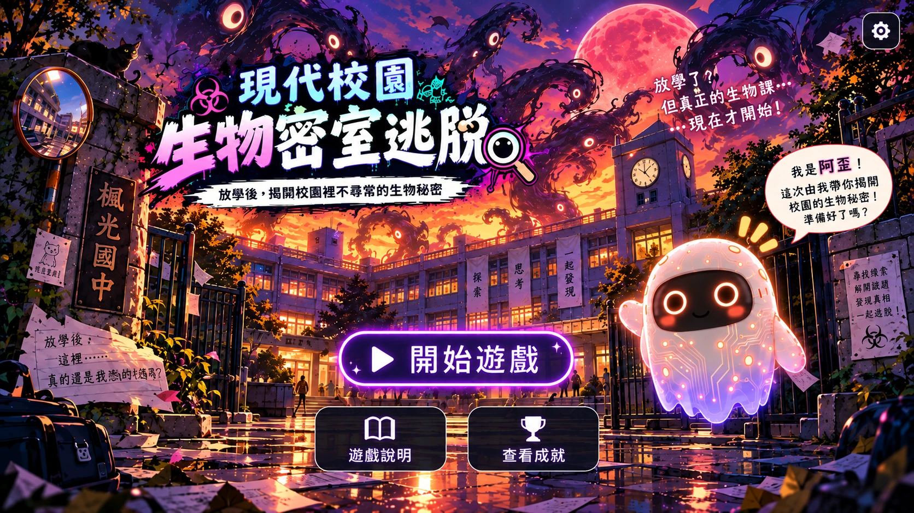

放學後的教室黑板在講話，實驗室培養皿發出螢光！跟隨校園守護 AI「阿歪」，解開 16 道生物謎題，找回遺失的記憶核心，解除校園神秘危機！
⏱️ 本次挑戰時間：全場 10 分鐘
黑板在講話？窗外那坨東西還在跟我眨眼！
第 1 關｜已收集 0 / 6 個線索
準備調查！
校園警報聲響起，倒數時間暫時耗盡！ 已解開的謎題與獲得的關卡認證均已完整保留。 若課堂活動需要更多時間，可請老師同意後加時繼續！
成績資料已成功存入剪貼簿。 請前往 Google Classroom 作業區直接貼上（Ctrl+V），並附上螢幕截圖即可繳交！
你破解了 16 道生物謎題，阿歪找回了守護 AI 的核心記憶！